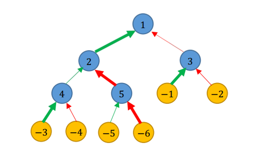

【样例解释 1】

如图所示，我们分别用蓝色、黄色节点表示城市、乡村；用绿色、红色箭头分别表示公路、铁路；用加粗箭头表示翻修的道路。
一种不便利值等于 $54$ 的方法是：翻修通往城市 $2$ 和城市 $5$ 的铁路，以及通往其他城市的公路。用 $\rightarrow$ 和 $\Rightarrow$ 表示公路和铁路，用 $_{*}\rightarrow$ 和 $_{*}\Rightarrow$表示翻修的公路和铁路，那么：
- 编号为 $1$ 的乡村到达首都的路线为：$−1 _{*}\rightarrow 3 \Rightarrow 1$，经过 $0$ 条未翻修公路和 $1$ 条未翻修铁路，代价为 $3 \times (1 + 0) \times (2 + 1) = 9$；
- 编号为 $2$ 的乡村到达首都的路线为：$−2 \Rightarrow 3 \Rightarrow 1$，经过 $0$ 条未翻修公路和 $2$ 条未翻修铁路，代价为 $2 \times (1 + 0) \times (3 + 2) = 10$；
- 编号为 $3$ 的乡村到达首都的路线为：$−3 _{*}\rightarrow 4 \rightarrow 2 _{*}→ 1$，经过 $1$ 条未翻修公路和 $0$ 条未翻修铁路，代价为 $3 \times (2 + 1) \times (1 + 0) = 9$；
- 编号为 $4$ 的乡村到达首都的路线为：$−4 \Rightarrow 4 \rightarrow 2 {*}\rightarrow 1$，经过 $1$ 条未翻修公路和 $1$ 条未翻修铁路，代价为 $1 \times (2 + 1) \times (3 + 1) = 12$；
- 编号为 $5$ 的乡村到达首都的路线为：$−5 → 5 _{*}\Rightarrow 2 _{*}\rightarrow 1$，经过 $1$ 条未翻修公路和 $0$ 条未翻修铁路，代价为 $2 \times (3 + 1) \times (1 + 0) = 8$；
- 编号为 $6$ 的乡村到达首都的路线为：$−6 _{*}\Rightarrow 5 _{*}\Rightarrow 2 _{*}\rightarrow 1$，经过 $0$ 条未翻修公路和 $0$ 条未翻修铁路，代价为 $1 \times (3 + 0) \times (2 + 0) = 6$；
总的不便利值为 $9 + 10 + 9 + 12 + 8 + 6 = 54$。可以证明这是本数据的最优解。
【样例解释 2】
在这个样例中，显然应该翻修所有公路。
【数据规模】
共 $20$ 组数据，编号为 $1 ∼ 20$。
对于编号 $\le 4$ 的数据，$n \le 20$；
对于编号为 $5 \sim 8$ 的数据，$a_i, b_i, c_i \le 5，n \le 50$；
对于编号为 $9 \sim 12$ 的数据，$n \le 2000$；
对于所有的数据，$n \le 20000$，$1 \le a_i, b_i \le 60$，$1 \le c_i \le 10^9$，$s_i, t_i$ 是 $[−n, −1] \cap (i, n − 1]$ 内的整数，任意乡村可以通过不超过 $40$ 条道路到达首都。
 Comet OJ
Comet OJ